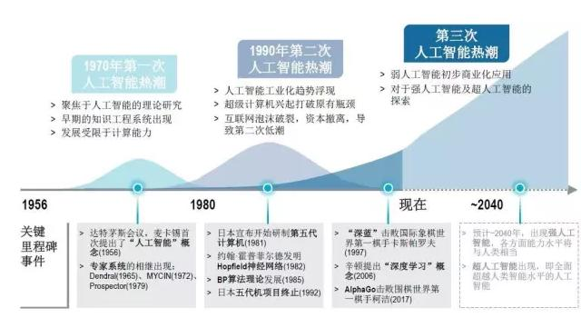
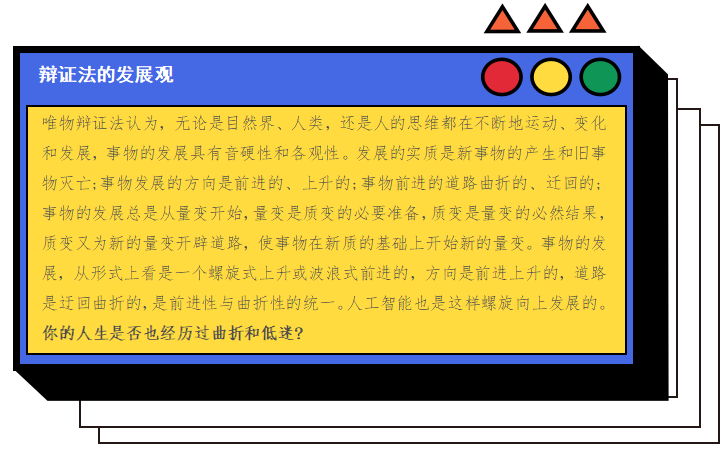

任务一 现代人工智能
【任务描述】
1956年达特茅斯会议被广泛认为是人工智能诞生的标志，经过60多年的蜿蜒前行，时至今日，人工智能发展日新月异，此刻AI已经走出实验室，离开棋盘，已通过智能客服、智能医生、智能家电等服务场景在诸多行业进行深入而广泛的应用。可以说，AI正在全面进入我们的日常生活，属于未来的力量正席卷而来。让我们来回顾下人工智能走过的曲折发展历程。
【任务实施】
1.1人工智能的第一次高峰
1950年，一位名叫马文·明斯基(后被人称为“人工智能之父”)的大四学生与他的同学邓恩·埃德蒙一起，建造了世界上第一台神经网络计算机，常常被认为是人工智能的一个起点。同年，被称为“计算机之父”的阿兰·图灵提出了一个举世瞩目的想法—图灵测试。图灵还大胆预言了真正具备智能机器的可行性。1956年，在由达特茅斯学院举办的一次会议上，计算机专家约翰·麦卡锡提出了“人工智能”一词。就在这次会议后不久，麦卡锡从达特茅斯搬到了MIT。同年，明斯基也搬到了这里，之后两人共同创建了世界上第一座人工智能实验室——MIT AI LAB实验室。茅斯会议正式确立了AI这一术语，并且开始从学术角度对AI展开了严肃而精专的研究。在那之后不久，最早的一批人工智能学者和技术开始涌现。在这段长达十余年的时间里，计算机被广泛应用于数学和自然语言领域，用来解决代数、几何和英语问题。这让很多研究学者看到了机器向人工智能发展的信心。甚至在当时，有很多学者认为：“二十年内，机器将能完成人能做到的一切。”
1.2人工智能第一次低谷
上个世纪70年代，人工智能进入了一段痛苦而艰难岁月。由于科研人员在人工智能的研究中对项目难度预估不足，不仅导致与美国国防高级研究计划署的合作计划失败，还让大家对人工智能的前景蒙上了一层阴影。与此同时，社会舆论的压力也开始慢慢压向人工智能这边,导致很多研究经费被转移到了其他项目上。在当时，人工智能面临三个技术瓶颈，一是计算机性能不足，导致早期很多程序无法在人工智能领域得到应用；二是问题的复杂性，早期人工智能程序主要是解决特定的问题，因为特定的问题对象少，复杂性低，可一旦问题上升维度，程序立马就不堪重负了；三是数据量严重不足，在当时不可能找到足够大的数据库来支撑程序进行深度学习，这很容易导致机器无法读取足够量的数据进行智能化。
1.3人工智能的崛起
1980年，卡内基梅隆大学为数字设备公司设计了一套名为XCON的“专家系统”。这是一种采用人工智能程序的系统，具有完整专业知识和经验的计算机智能系统，可以简单的理解为“知识库+推理机”的组合。这套系统在1986年之前能为公司每年节省下来超过四千美元经费。有了这种商业模式后，衍生出了像Symbolics、Lisp Machines等和IntelliCorp、Aion等这样的硬件，软件公司。在这个时期，仅专家系统产业的价值就高达5亿美元，人工智能应用进入繁荣期。
1.4人工智能第二次低谷
1987年，苹果和IBM公司生产的台式机性能都超过了Symbolics等厂商生产的专家系统通用计算机，从此，专家系统风光不再，曾经轰动一时的人工智能系统就宣告结束历史进程，人工智能应用进入低谷期。
1.5人工智能再次崛起
上世纪九十年代中期开始，随着AI技术尤其是神经网络技术的逐步发展，以及人们对AI开始抱有客观理性的认知，人工智能技术开始进入平稳发展时期。1997年5月11日，IBM的计算机系统“深蓝”战胜了国际象棋世界冠军卡斯帕罗夫，又一次在公众领域引发了现象级的AI话题讨论，成为人工智能发展的一个重要里程。2006年，Hinton在神经网络的深度学习领域取得突破，人类又一次看到机器赶超人类的希望,也是标志性的技术进步。人工智能技术已经掀起第四次商业革命，谷歌、微软、百度等互联网巨头以及众多的初创科技公司，纷纷加入人工智能产品的战场，掀起又一轮的智能化狂潮，随着技术的日趋成熟和大众的广泛接受，这一次狂潮也许会架起一座现代文明与未来文明的桥梁。

【任务拓展】
